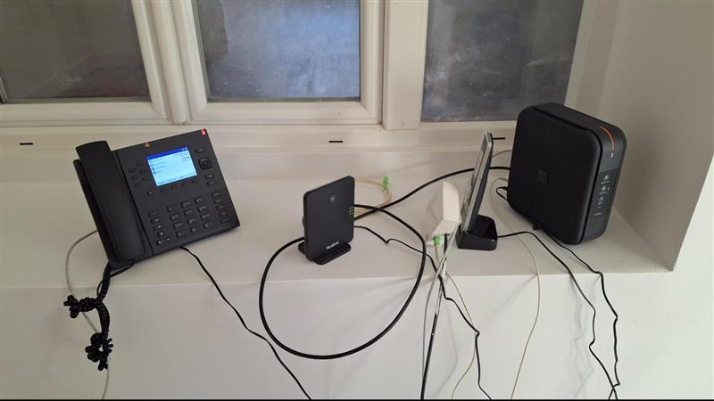

Intervention Orange Connect Pro
Rôle : Technicien d'intervention (Alternant) | Lieu : Secteur de Flers | Période : 2025-2026
Contexte et Objectifs
Orange Connect Pro est une offre professionnelle complète destinée aux TPE/PME, combinant connexion internet haut débit, téléphonie IP (ToIP) et solution de secours 4G/5G. Mon rôle consiste à migrer les clients depuis leurs anciennes installations vers cette solution moderne tout en garantissant la continuité de service.
Je décompose cette mission en plusieurs phases critiques :
- Diagnostic préalable : J'effectue un audit complet de l'installation existante et je sauvegarde les configurations
- Migration technique : Je remplace les équipements et je transfère les paramètres
- Mise en service : Je configure la ToIP, je réalise les tests fonctionnels et je forme le client
Déroulement de l'Intervention
Phase de Diagnostic et Préparation
Audit initialAvant toute intervention, je réalise un audit complet pour garantir une migration sans perte de service et j'identifie les éléments critiques à préserver.
Je teste l'accueil téléphonique et les messages via la plateforme ATS Studio pour documenter la configuration actuelle
Je récupère les paramètres réseau de l'ancienne box (DHCP, redirections de ports, Wi-Fi, règles firewall)
J'identifie les équipements connectés (postes téléphoniques, imprimantes réseau, caméras IP)
J'informe sur les étapes, je planifie la coupure et j'obtiens l'accord formel
Déploiement Matériel
Installation physiqueJ'installe les nouveaux équipements Orange Connect Pro en remplacement de l'infrastructure existante.
Box principal avec ToIP intégrée
Solution de secours 4G/5G
Base téléphonique principale
Postes DECT supplémentaires
Je débranche l'équipement existant et je récupère les câbles
Je raccorde à la ligne Fibre et au réseau local
Je positionne de manière optimale pour la réception 4G/5G et je configure le secours
Je connecte les équipements critiques (serveur, switch, imprimantes)
Configuration Réseau et Restauration
ParamétrageJe restaure les paramètres sauvegardés et j'active le mode professionnel pour débloquer les fonctionnalités avancées.
Je me connecte à l'interface d'administration de la Livebox via son adresse IP (souvent : 192.168.1.1)
Je bascule vers le profil professionnel pour accéder aux paramètres avancés
Je configure le serveur DHCP avec les plages d'adresses et réservations IP
Je reconfigure les règles NAT pour les services exposés (VPN, caméras, serveur)
Je restaure les SSID, mots de passe et paramètres de sécurité (WPA3)
Configuration Téléphonie IP (ToIP)
VoIPJe paramètre la ligne SIP et j'appaire les équipements téléphoniques DECT.
Je contrôle l'enregistrement de la ligne sur le serveur VoIP Orange
Je branche la base DECT sur le port ip de la Livebox
J'associe les combinés sans fil à la base principale via la procédure d'appairage
Je vérifie et j'ajuste l'accueil téléphonique via ATS Studio si nécessaire
Tests Fonctionnels et Recette Client
ValidationJe valide l'intervention finale dans l'application MOBI
Appels d'un numéro d'urgence (18) + entrants/sortants + SVI
Navigation et débit contractuel
Accès imprimantes et serveurs
Basculement automatique Airbox
J'explique le fonctionnement des équipements et je remets la documentation
Je clôture administrativement l'intervention dans l'application terrain
Je communique les identifiants Wi-Fi et interface d'administration
Difficultés Rencontrées et Solutions Apportées
Problème : Mode professionnel non activé automatiquement sur certaines box
Solution : J'ai contacté le service Connect Pro pour forçage du profil à distance et déverrouillage des paramètres avancés
Problème : Échec d'association base/combinés dû à inversion MAC
Solution : J'ai corrigé la base de données avec le support technique, puis j'ai réalisé un réappairage manuel réussi
Problème : Signal Airbox insuffisant pour le secours
Solution : J'ai repositionné de manière optimale l'Airbox près d'une fenêtre ou en hauteur
Problème : Coupure plus longue que prévue en cas d'incident
Solution : J'ai planifié une marge de sécurité et j'ai communiqué de manière proactive avec le client
Analyse Réflexive
Cette mission m'a permis de développer une autonomie technique et relationnelle dans un contexte professionnel exigeant. J'ai acquis une maîtrise complète du processus de migration Orange Connect Pro, de l'audit initial à la validation finale.
🔬 Sur le plan technique
- J'ai développé ma maîtrise de la configuration réseau avancée (DHCP, NAT, Wi-Fi)
- J'ai acquis des compétences en téléphonie IP et protocole SIP
- J'ai appris à diagnostiquer rapidement les dysfonctionnements
- J'utilise de manière experte les outils métier (MOBI, ATS Studio)
📋 Sur le plan organisationnel
- J'applique une méthodologie rigoureuse pour garantir la continuité de service
- Je sauvegarde systématiquement les configurations
- J'anticipe et je gère les imprévus
🤝 Sur le plan relationnel
- Je communique de manière rassurante avec les clients pendant les coupures
- Je donne des explications pédagogiques des procédures techniques
- Je collabore efficacement avec les supports techniques distants
📈 Points d'amélioration identifiés
- Mieux anticiper les temps d'intervention en intégrant systématiquement une marge pour les incidents imprévus
- Renforcer ma documentation des configurations pour faciliter les interventions futures et le suivi
- Approfondir mes connaissances sur les architectures VoIP complexes (multi-sites, SDA)
Cette expérience confirme mon intérêt pour les métiers d'administrateur réseau et télécom, avec une orientation vers les fonctions de responsable infrastructure ou de spécialiste VoIP.
Trace et Preuve
Preuve techniques disponible :
- Photos de l'installation physique (Livebox 7, Airbox, postes DECT)

Trace 4